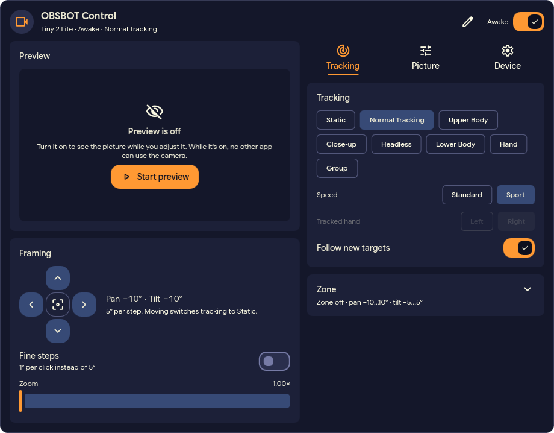

Debian, Ubuntu
curl -LO $DL/obsbot4linux_${VER}_amd64.deb
sudo apt install ./obsbot4linux_${VER}_amd64.deb
On ARM64 the file is obsbot4linux_${VER}_arm64.deb.
Unofficial, open source, for Linux
Switch AI tracking, move the gimbal, zoom, save presets and adjust picture, sound and sleep, from the terminal or from your desktop bar. Video calls and other apps keep streaming while you change settings.
Tested with the OBSBOT Tiny 2 Lite. Not affiliated with OBSBOT.
obsbot4linuxd owns the cameras and is started by a
systemd user socket. obsbot4linux, its command
line, reads and changes every setting, with JSON output for
scripts. Works on any Linux desktop.
A bar widget, desktop widget and Control Center tile for the Dux (DankMaterialShell) desktop shell, with a live preview. It talks to the same daemon. About the widget

The command line and the widget offer what the camera itself offers and reports, nothing more: each camera's settings, values and ranges come from its description. For the Tiny 2 Lite that is:
Static, normal tracking, upper body, close-up, headless, lower body, hand and group. Choose the tracking profile and speed, and see whether a target is detected and where its box is.
Zoom from 1× to 4×, at once or at a speed, and the field of view. Set how the automatic framing follows you: shot size, zoom speed, offset and which part of the body stays in frame.
Point the camera with pan and tilt, optionally at a set speed, or turn it. Save, rename, recall and delete the three presets stored in the camera, plus named views. Choose the pose and tracking mode the camera starts with.
Limit tracking to an area, set the pose the camera returns to when you leave it, and decide whether it then follows the next person. For hand tracking: which hand, its area and when it returns.
HDR, automatic exposure for the whole picture or for faces, or manual exposure time and gain. Focus mode, white balance, brightness, contrast, saturation, sharpness, hue, anti-flicker and mirror.
Microphone on or off, volume, noise reduction, automatic gain, and whether the microphone stays on while the camera sleeps.
Sleep and wake, an automatic sleep timer and the picture shown while asleep. Status LED brightness and blinking, gesture control and its zoom ratio, and a factory reset that asks for confirmation.
See whether an app is streaming from the camera and which one: a browser, OBS or ffmpeg. The widget shows a red dot in the bar.
Every command prints the protocol objects with
--json, and the exit code says what went wrong.
obsbot4linux watch prints every state change as
JSON lines. Several cameras and hotplug are handled.
A request sends exactly what it names and nothing else. Everything you set is stored by the camera itself. No account and no cloud: the tools talk to the camera and to apps on your own computer, nothing else.
One model is supported today. A model is added only once someone has recorded it on a real camera.
| Model | USB | Support | Firmware tested |
|---|---|---|---|
| OBSBOT Tiny 2 Lite | 3564:fef9 |
tested | 6.2.8.1 |
If you own another OBSBOT model and can help,
open an issue
with the model name and the output of
obsbot4linux devices --report: it prints the USB
facts an issue needs, without serial numbers. Please do not paste
logs or the full output of
obsbot4linux status --json into a public issue.
Packages for x86_64 and ARM64 are attached to every
release, together with SHA256SUMS. The latest release is
1.0.0. Set VER once, then use
the lines for your system:
VER=1.0.0
DL=https://github.com/hellwand/obsbot4linux/releases/download/v$VERcurl -LO $DL/obsbot4linux_${VER}_amd64.deb
sudo apt install ./obsbot4linux_${VER}_amd64.deb
On ARM64 the file is obsbot4linux_${VER}_arm64.deb.
curl -LO $DL/obsbot4linux-$VER-1.x86_64.rpm
sudo dnf install ./obsbot4linux-$VER-1.x86_64.rpm
On openSUSE use sudo zypper install. On ARM64 the
file is obsbot4linux-$VER-1.aarch64.rpm.
curl -LO $DL/obsbot4linux-$VER-1-x86_64.pkg.tar.zst
sudo pacman -U obsbot4linux-$VER-1-x86_64.pkg.tar.zst
On ARM64 the file is
obsbot4linux-$VER-1-aarch64.pkg.tar.zst.
curl -LO $DL/obsbot4linux-$VER-x86_64-linux.tar.gz
tar -xzf obsbot4linux-$VER-x86_64-linux.tar.gz
The tarball (aarch64 for ARM64) holds both
binaries, the systemd user units and the completions. Put
obsbot4linux and obsbot4linuxd on your
PATH and copy systemd/* to
~/.config/systemd/user/. If
obsbot4linuxd is not in /usr/bin,
point the service at it as the
README
shows.
The deb, rpm and tarball binaries need glibc 2.34 or newer (Debian 12, Ubuntu 22.04, Fedora 35, RHEL 9 or openSUSE Leap 15.6 and newer); the Arch package is built on current Arch.
systemctl --user enable --now obsbot4linux.socket
The packages install the programs and the user units but enable
nothing. The socket starts the daemon when the first command or
the widget connects; no command starts a daemon itself. Try it
with obsbot4linux status.
There is no package repository: to update, install the package of the next release, then restart the daemon:
systemctl --user restart obsbot4linux.serviceVersion 1.0 replaces the daemon, its protocol and the command line: the commands are new, and the socket must be enabled. Read Upgrading from 0.13 in the changelog before you install, and update the widget together with the tool. Nothing set on the camera is lost.
To build from source you need Rust 1.88 or newer; see the README.
Seven commands cover every camera: they map one to one onto the daemon's protocol, so a camera's settings and actions come from its description, not from commands of their own. Every command sends one request.
obsbot4linux devices # the cameras the daemon sees
obsbot4linux status # every setting of the camera, grouped
obsbot4linux describe # what the camera offers: settings, values, ranges, actions
obsbot4linux describe gimbal.move # one setting or action
obsbot4linux get tracking.mode zoom # some settings or groups
obsbot4linux set tracking.mode=upper_body # one or more settings, written together
obsbot4linux set exposure.mode=manual exposure.time=20000
obsbot4linux do gimbal.move pan=20 tilt=-5 # an action with its parameters
obsbot4linux do preset.save slot=0 name=Desk
obsbot4linux watch --live pose # the state as JSON lines, as it changeson|off|true|false, a choice by name
(upper_body), a number 1.5, a range
min,max, a pose pan,tilt,zoom.
--device takes its id, the last four or more
characters of its serial, or a model key.
confirm=true:
do factory_reset confirm=true.
--json prints the protocol
objects, errors as {"error":{…}}.
A plugin for the Dux (DankMaterialShell) desktop shell. Its controls follow each camera's description, so it shows only what your camera offers, and changes made from the terminal show up in the widget at once.
qt6-multimedia for the live preview. Without it
every other control still works.
Install OBSBOT Control from the DMS plugin browser, or by hand:
git clone https://github.com/hellwand/obsbot4linux-dux.git \
~/.config/dms/plugins/obsbot4linuxDux
dms ipc call plugins enable obsbot4linuxDux
Then add the obsbot4linuxDux widget to a bar in the
DMS settings. Update it together with obsbot4linux:
dms plugins update obsbot4linuxDux, then
dms restart.
Single maintainer. Read the changelog before updating. The evidence for every setting of the Tiny 2 Lite is cited in the field ledger.